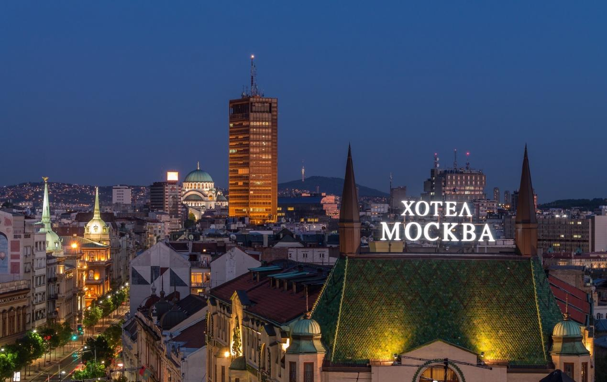
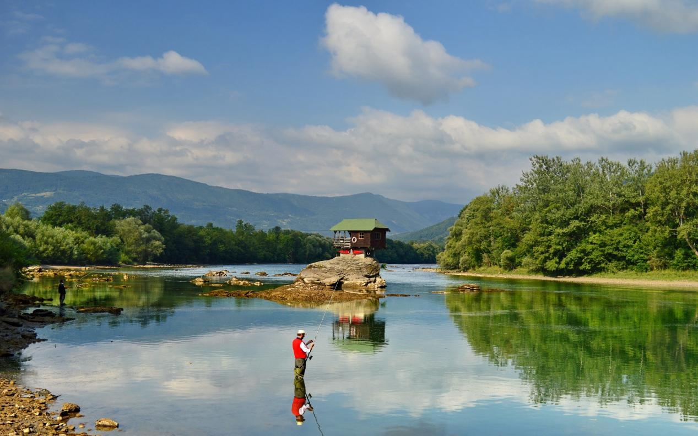
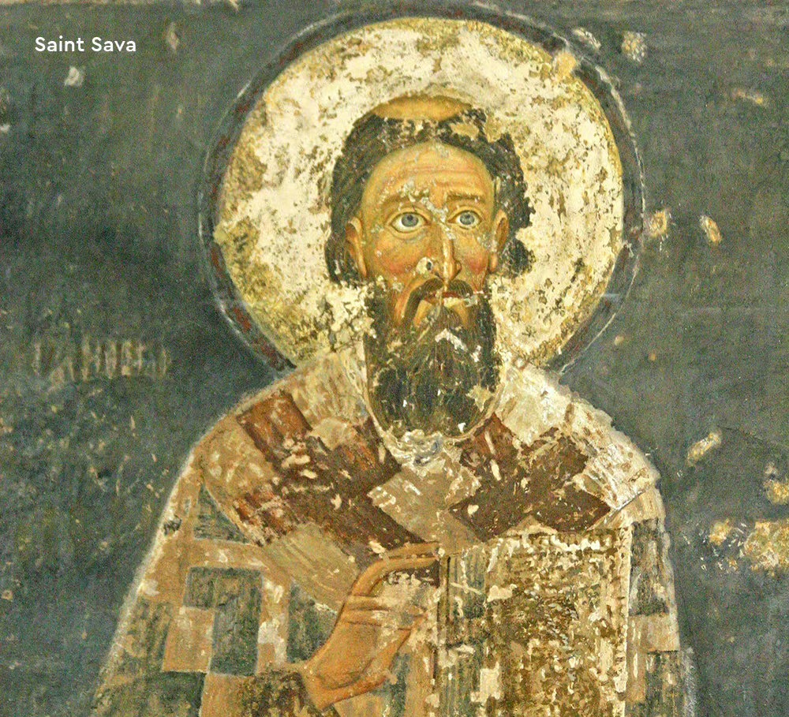
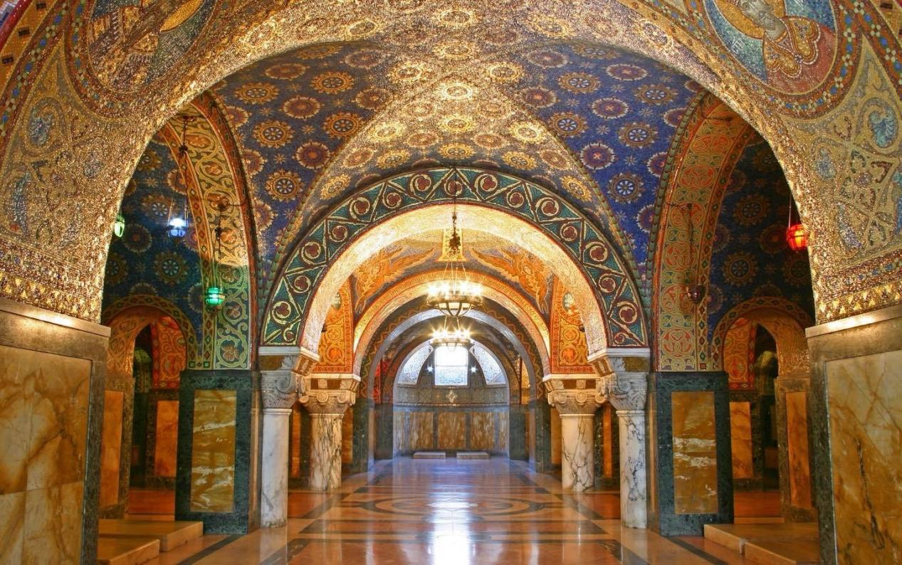
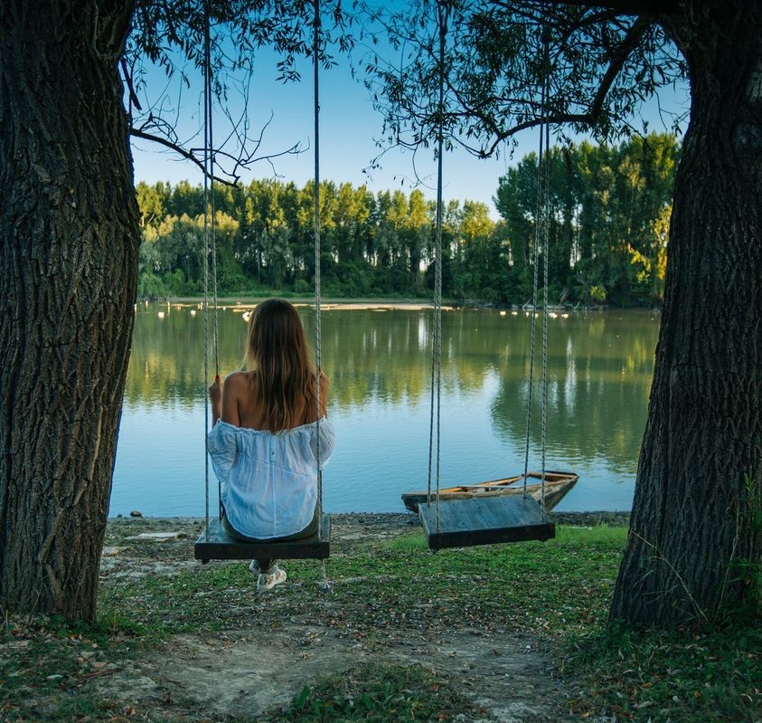
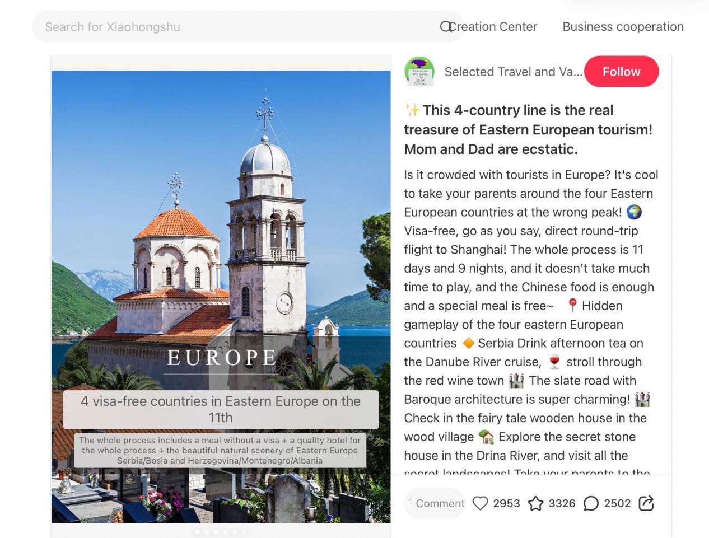
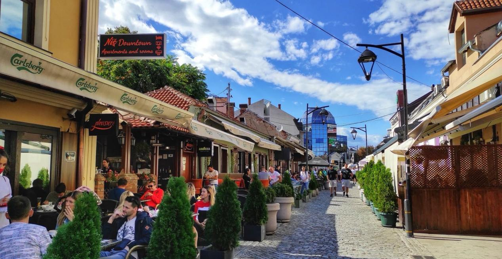
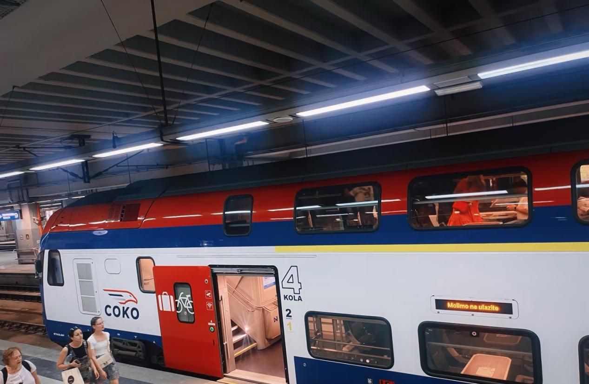
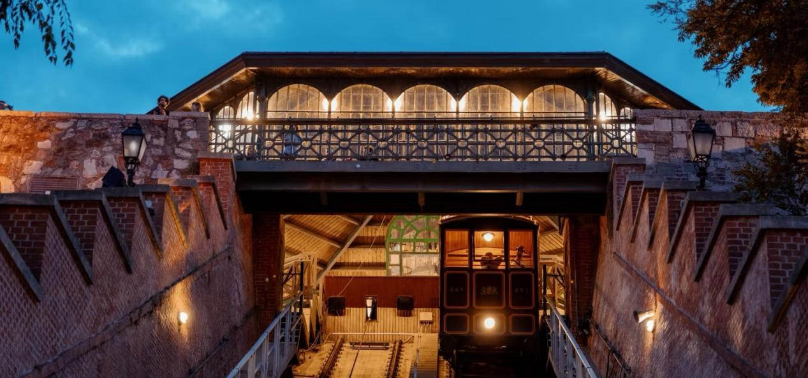
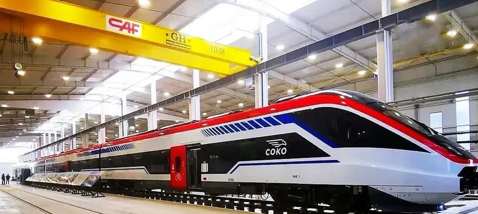

✕
Understanding Serbia's tourism landscape — from policy advantages to emerging trends
Policy Advantage

With a visa-free policy for Chinese citizens, Serbia makes it easier than ever for travelers to explore its charms. The profile of incoming Chinese tourists has shifted notably, with a growing share of independent and in-depth travelers.

Thanks to its unique Eastern European flair and great value, Serbia has quietly gone viral on platforms like Xiaohongshu and TikTok, becoming a new favorite among young Chinese travelers. It offers all the rewards of travel — without the crowds.
Heritage Preservation

Serbia treasures its rich legacy of medieval monasteries, pursuing sustainable preservation even as tourism grows. UNESCO-listed sites like Studenica Monastery continue to guard centuries of faith and artistry.

While developing its tourism industry, Serbia maintains its original charm. The country's pristine natural landscapes and traditional culture remain well-preserved, offering visitors an authentic experience far from mass tourism.
Emerging Trends

Beyond Belgrade and Novi Sad, Serbia offers countless undiscovered treasures: the ethereal Uvac Canyon meanders, the fairy-tale village of Drvengrad, and the pristine wilderness of Đerdap National Park.

Young travelers are increasingly designing their own routes: wine tasting in Fruška Gora, monastery trails in central Serbia, or a "Danube Journey" from Belgrade to the Iron Gates — unique, personalized adventures.
Eco-Tourism
Serbia is developing eco-tourism in national parks, promoting responsible wildlife viewing (especially the griffon vultures of Uvac), and supporting traditional crafts communities — all while preserving the authentic character of rural villages.

Serbia's tourism strategy focuses on sustainable growth: improving infrastructure, expanding flight connections with China, and developing niche products like wine tourism, spa resorts, and adventure travel.
Infrastructure

The high-speed Belgrade–Novi Sad line has reduced travel time to just 35 minutes. Plans are underway to expand the network, connecting more Serbian cities and improving cross-border links to Budapest and beyond.

Hainan Airlines and Air Serbia operate direct flights between Beijing/Tianjin and Belgrade, with flight times around 10-12 hours. More routes are expected as demand grows.
Connectivity

The Belgrade–Budapest railway, a flagship project of the Belt and Road Initiative, is enhancing Serbia's transport infrastructure and making travel faster, smoother, and more convenient than ever. This historic connection strengthens cultural and economic ties between China and Serbia.